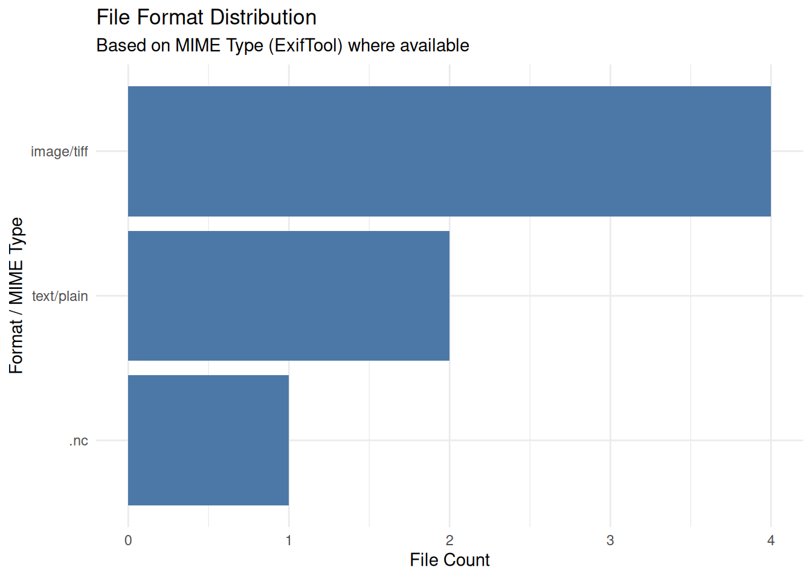

Code
# install.packages("tidyverse", "DT", "tools", "rstudioapi", "exiftoolr")This notebook performs the initial “Triage” of a data package by inventorying file extensions.
Establish an initial inventory of all file types within a submission. Our objective is to distinguish between extension-based labels and internal format signatures to identify mislabeled, obsolete, or high-risk files.
A file extension is merely a textual label. Relying on it can hide malicious executables renamed as media files or proprietary formats that lack a long-term migration path (Brown 2013).
Curation Objectives:
.DS_Store, Thumbs.db) that clutter the archive.We utilize the tidyverse (Wickham et al. 2019) for data manipulation and tools (2024) for path parsing.
If you don’t have the tidyverse package installed, run this command once in your R console:
# install.packages("tidyverse", "DT", "tools", "rstudioapi", "exiftoolr")This chunk loads the necessary library for the session.
Note: The exiftoolr package requires the ExifTool software. The code below checks for it and attempts to install it locally if missing.
library(tidyverse)
library(DT) # For interactive tables
library(tools) # For file path handling
library(rstudioapi) # For interactive selection
library(exiftoolr) # R wrapper for ExifTool
# Check if ExifTool is available; if not, try to install locally
if (is.null(exif_version())) {
message("ExifTool not found. Attempting local installation...")
tryCatch({
install_exiftool()
message("ExifTool installed successfully.")
}, error = function(e) {
warning("Could not install ExifTool. Deep metadata extraction may fail.")
})
}This section identifies the directory to be analyzed and creates a complete list of every file within it, including those in sub-folders and hidden files. The directory is set by the target_dir parameter at the top of this document.
# Hybrid Selection Logic
if (interactive() && requireNamespace("rstudioapi", quietly = TRUE)) {
message("Running in interactive mode. Please select a directory.")
selected_dir <- rstudioapi::selectDirectory(caption = "Select Data Directory")
if (is.null(selected_dir)) {
stop("No directory selected. Analysis aborted.")
}
target_dir <- selected_dir
} else {
# Fallback for rendering/batch mode
target_dir <- params$target_dir
}
# Validation
if (!dir.exists(target_dir)) {
stop(paste("Target directory does not exist:", target_dir))
}
message("Inventorying directory: ", target_dir)We construct a detailed table including the relative path (to locate files) and detectc risks.
Data Collected:
Path: The relative path to the file (critical for locating “bad” files).
Extension: The file extension (normalized to lowercase).
Size: File size in Bytes and Megabytes (MB).
Flags: Automatic tags for “Empty”, “System Junk”, or “Executable”.
message("Scanning files... This may take a moment for large directories.")
# 1. Get all files recursively
all_files <- list.files(
path = target_dir,
recursive = TRUE,
full.names = TRUE,
all.files = TRUE
)
message("Found ", length(all_files), " total files.")
if (length(all_files) > 0) {
# 2. Build Inventory Dataframe
inventory <- tibble(FullPath = all_files) %>%
mutate(
FileName = basename(FullPath),
# Calculate relative path for readability
RelativePath = str_remove(FullPath, paste0(target_dir, "/?")),
# Extract extension: Get text after last dot, lowercase it.
Extension = tolower(file_ext(FileName)),
Extension = if_else(Extension == "", "(no extension)", paste0(".", Extension)),
# Get File Size
Size_Bytes = file.size(FullPath),
Size_MB = round(Size_Bytes / 1024^2, 4)
)
# 3. Add Risk Flags
junk_patterns <- c("\\.ds_store", "thumbs\\.db", "__macosx")
exec_patterns <- c("\\.exe$", "\\.bat$", "\\.sh$", "\\.bin$", "\\.jar$")
inventory <- inventory %>%
mutate(
Risk_Flag = case_when(
Size_Bytes == 0 ~ "Zero-Byte File",
str_detect(tolower(FileName), paste(junk_patterns, collapse = "|")) ~ "System Junk",
str_detect(tolower(FileName), paste(exec_patterns, collapse = "|")) ~ "Executable",
TRUE ~ "Clean"
)
)
# Preview
datatable(inventory %>% select(RelativePath, Extension, Size_MB, Risk_Flag),
options = list(pageLength = 10, scrollX = TRUE),
caption = "Table 1: Full File Inventory with Risk Flags")
} else {
message("Directory is empty.")
inventory <- tibble()
}This section goes beyond the filename. We use ExifTool to read the file headers. This allows us to:
Verify Formats: Does the MIMEType match the extension?
Check Integrity: Does ExifTool report any Warning (e.g., “Corrupted header”)?
Extract Context: Get Author, CreateDate, or ImageSize metadata.
if (nrow(inventory) > 0 && !is.null(exif_version())) {
message("Running ExifTool on ", nrow(inventory), " files...")
# We select specific tags to keep the report manageable
tags_to_extract <- c("FileName", "MIMEType", "FileType", "Author", "CreateDate", "Warning", "ImageSize")
tryCatch({
# Run ExifTool on the list of files
exif_data <- exif_read(inventory$FullPath, tags = tags_to_extract)
# Clean up column names (ExifTool returns "SourceFile" as the path)
exif_data <- exif_data %>%
rename(FullPath = SourceFile) %>%
select(-FileName) # Remove duplicate filename col if present
# Join with main inventory
inventory <- left_join(inventory, exif_data, by = "FullPath")
message("Metadata extraction complete.")
}, error = function(e) {
warning("ExifTool failed: ", e$message)
})
}
# Preview Combined Data
if (nrow(inventory) > 0) {
cols_to_show <- c("RelativePath", "Extension", "MIMEType", "Risk_Flag")
if ("Warning" %in% names(inventory)) cols_to_show <- c(cols_to_show, "Warning")
datatable(inventory %>% select(any_of(cols_to_show)),
options = list(pageLength = 10, scrollX = TRUE),
caption = "Table 1: File Inventory with ExifTool Metadata")
}We aggregate the inventory to visualize the dataset’s “content profile.” This helps curators identify if the submission matches the depositor’s description (e.g., “They said it was images, but I see mostly .docx files”).
if (nrow(inventory) > 0) {
# Use MIMEType if available, otherwise Extension
plot_data <- inventory %>%
mutate(Format_Label = if_else(!is.na(MIMEType) & MIMEType != "", MIMEType, Extension)) %>%
count(Format_Label, name = "Count", sort = TRUE) %>%
head(15)
ggplot(plot_data, aes(x = reorder(Format_Label, Count), y = Count)) +
geom_col(fill = "#4C78A8") +
coord_flip() +
labs(
title = "File Format Distribution",
subtitle = "Based on MIME Type (ExifTool) where available",
x = "Format / MIME Type",
y = "File Count"
) +
theme_minimal()
}
We export the full inventory to help curators locate and delete the specific files flagged as “Junk” or “Zero-Byte.”
output_dir <- file.path("Results", "Inspect_Extensions")
if (!dir.exists(output_dir)) dir.create(output_dir, recursive = TRUE)
summary_file <- file.path(output_dir, paste0("Format_Summary_", Sys.Date(), ".csv"))
inventory_file <- file.path(output_dir, paste0("Full_Inventory_ExifTool_", Sys.Date(), ".csv"))
if (nrow(inventory) > 0) {
# Generate summary
summary_table <- inventory %>%
count(Extension, MIMEType, Risk_Flag, name = "Count") %>%
arrange(desc(Count))
write_csv(summary_table, summary_file)
write_csv(inventory, inventory_file)
message("Reports saved:")
message("1. ", summary_file)
message("2. ", inventory_file)
}Zero-Byte Risks: A file with 0 bytes is technically valid in the filesystem but semantically empty. It usually indicates a failed file transfer (e.g., an FTP interruption). These must be flagged to the depositor immediately.
Extension Mismatches: If you see a generic extension like .dat or .file, the depositor may have removed the extension. Use tools like DROID (see below) to identify the true format.
Corrupted Files: Filter for rows where the Warning column is not empty. ExifTool often detects truncated files that standard file system checks miss.
Preservation vs. Access: Distinguish between “Originals” (e.g., .wav, .tiff) and “Derivatives” (e.g., .mp3, .jpg). Ideally, the archive should preserve the uncompressed originals (see https://www.loc.gov/preservation/digital/formats/).
Metadata Privacy: Check the Author or GPS columns (if extracted). If these contain real names or locations for a de-identified dataset, the files must be scrubbed before publishing.
This notebook performs allows file identification. Foor deep indetification, curators can rely on tools maintained by national archives.
Siegfried / DROID: The industry standard for format identification. It scans the file’s binary signature (Magic Number) and matches it against PRONOM, the technical registry maintained by The National Archives UK (see https://www.itforarchivists.com/siegfried).
Apache Tika: A toolkit that detects thousands of file types and extracts metadata (e.g., Author, Date) from within the files.
FIDO (Format Identification for Digital Objects): A command-line tool designed for simplified integration into preservation pipelines (see https://openpreservation.org/tools/fido/).
For users who want to run this analysis on a server or from the command line, a pure R script is available to perform the same process.
Prerequisites: * R with tidyverse, magick, and exiftoolr installed. * ExifTool command-line software must be installed on the system.
Download the R Script: Inspect_Extensions_Script.R
#!/bin/bash
#SBATCH --nodes=1
#SBATCH --ntasks=1
#SBATCH --time=00:30:00
#SBATCH --job-name=ext_check_exif
# Load R module
module load R
# Load Perl module (Often required for ExifTool to run)
module load perl
# Define directories
DATA_DIR="/scratch/your_user/data_folder"
OUTPUT_DIR="/scratch/your_user/inventory_results"
# Run Script
Rscript Inspect_Extensions_Script.R $DATA_DIR $OUTPUT_DIR